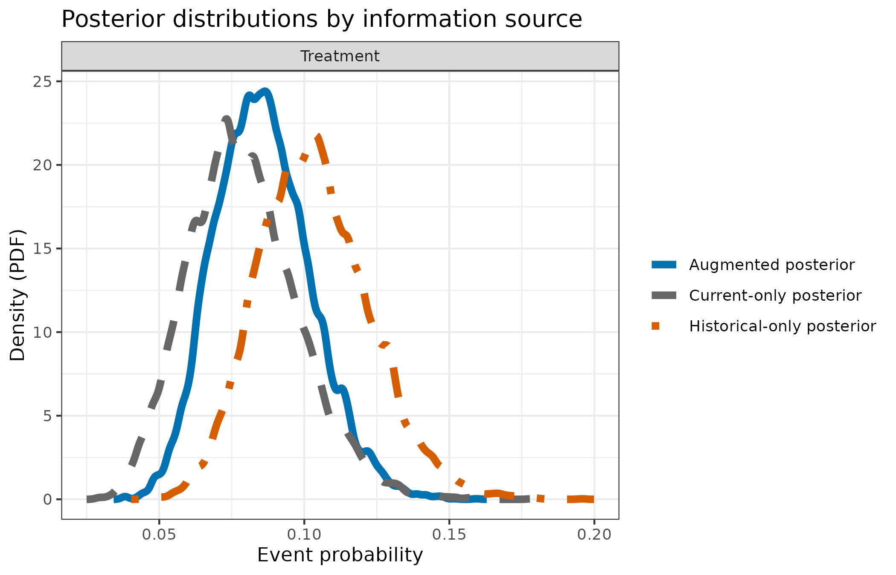
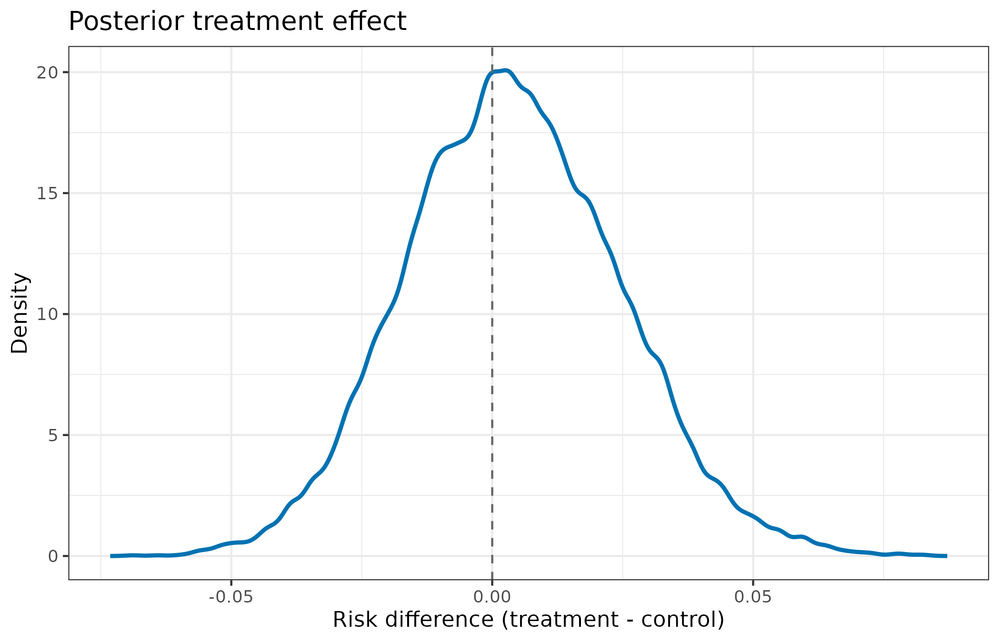

Binomial outcomes with bayesDP
Donnie Musgrove
Graeme L. Hickey
2026-11-15
Source:vignettes/bdpbinomial-vignette.Rmd
bdpbinomial-vignette.RmdPurpose and inputs
bdpbinomial() estimates an event probability from
independent binary outcomes. With two arms, the treatment effect is the
risk difference, treatment minus control. Define whether an event is
desirable or undesirable before interpreting its sign.
Supply an event count y and sample size N
for each available source. The suffixes _t,
_c, 0_t, and 0_c identify current
treatment, current control, historical treatment, and historical
control. Current treatment is required; control data may be current,
historical, or both. A historical-only control requires a justification
for comparing populations across studies.
The borrowing overview explains the
weighting choices, discount functions, and interpretation. The examples
below explicitly use method = "fixed"; the function default
is "mc".
One-arm example
Suppose 15 of 200 current participants and 25 of 250 historical participants experience the event. These are event probabilities over the same follow-up period, not incidence rates per unit of person-time.
set.seed(42)
current_only <- bdpbinomial(
y_t = 15, N_t = 200, y0_t = 25, N0_t = 250,
method = "fixed", fix_alpha = TRUE, alpha_max = 0
)
set.seed(42)
discounted <- bdpbinomial(
y_t = 15, N_t = 200, y0_t = 25, N0_t = 250,
method = "fixed", fix_alpha = FALSE, alpha_max = 1
)
set.seed(42)
full_borrowing <- bdpbinomial(
y_t = 15, N_t = 200, y0_t = 25, N0_t = 250,
method = "fixed", fix_alpha = TRUE, alpha_max = 1
)The table compares sensitivity analyses using the same baseline Beta(1, 1) prior. Limits are the 2.5th and 97.5th percentiles of the posterior draws.
fits <- list("Current only" = current_only, "Discounted" = discounted,
"Full borrowing" = full_borrowing)
comparison <- do.call(rbind, lapply(fits, function(fit) {
arm <- fit$posterior_treatment
c(alpha = arm$alpha_discount,
weighted_N0 = 250 * arm$alpha_discount,
median = median(arm$posterior),
lower = unname(quantile(arm$posterior, 0.025)),
upper = unname(quantile(arm$posterior, 0.975)))
}))
knitr::kable(comparison, digits = 4,
col.names = c("Historical weight", "Weighted historical N", "Median", "Lower 95% CrI", "Upper 95% CrI"))| Historical weight | Weighted historical N | Median | Lower 95% CrI | Upper 95% CrI | |
|---|---|---|---|---|---|
| Current only | 0.0000 | 0.0 | 0.0781 | 0.0464 | 0.1207 |
| Discounted | 0.3664 | 91.6 | 0.0850 | 0.0566 | 0.1211 |
| Full borrowing | 1.0000 | 250.0 | 0.0902 | 0.0663 | 0.1194 |
The estimated weight is 0.3664, corresponding to 91.6 weighted historical observations. This is moderate borrowing. The augmented posterior median is 0.085, compared with an observed current proportion of 0.075 and a current-only posterior median of 0.0781.
With full borrowing the posterior is Beta(41, 411), so the posterior mean is 0.0907. This differs slightly from the pooled observed proportion, 0.0889, because the baseline prior is retained. The table reports medians rather than means.
plot(discounted, type = "posteriors")
The augmented posterior borrows moderately from the historical observations. All curves describe uncertainty about the event probability, not the distribution of individual binary outcomes.
Two-arm example
Now add 20 events among 250 current control participants and 20 among 250 historical control participants. Borrowing is assessed separately for treatment and control.
set.seed(42)
fit_two <- bdpbinomial(
y_t = 15, N_t = 200, y0_t = 25, N0_t = 250,
y_c = 20, N_c = 250, y0_c = 20, N0_c = 250,
method = "fixed", fix_alpha = FALSE, alpha_max = 1
)
summary(fit_two)##
## Two-armed bdp binomial
##
## Current treatment data: 15 and 200
## Current control data: 20 and 250
## Historical treatment data: 25 and 250
## Historical control data: 20 and 250
## Stochastic comparison (p_hat) - treatment (current vs. historical data): 0.3664
## Discount function value (alpha) - treatment: 0.3664
## Stochastic comparison (p_hat) - control (current vs. historical data): 0.9914
## Discount function value (alpha) - control: 0.9914
## Treatment effect: treatment - control
## 95 percent equal-tailed credible interval:
## -0.0347 0.0453
## Posterior medians:
## treatment control
## 0.0850 0.0813
risk_difference <- fit_two$posterior_treatment$posterior -
fit_two$posterior_control$posterior
risk_interval <- quantile(risk_difference, c(0.025, 0.975))The control weight is 0.9914, giving nearly full borrowing, while the treatment weight remains 0.3664. The posterior median risk difference is 0.0035, with a 95% credible interval from -0.0347 to 0.0453. This interval includes both negative and positive differences; it does not establish equivalence. If the event is adverse, a negative difference favours treatment.
plot(fit_two, type = "effect")
Posterior risk difference. The dashed line marks no difference; clinical equivalence would require a separately specified margin.
Sensitivity to the weighting method
The draw-specific method produces a distribution of weights rather than one estimated weight. Compare both its weights and outcome summaries with the fixed analysis.
set.seed(42)
fit_mc <- bdpbinomial(
y_t = 15, N_t = 200, y0_t = 25, N0_t = 250,
method = "mc", fix_alpha = FALSE, alpha_max = 1
)
knitr::kable(rbind(
"Historical weight" = quantile(fit_mc$posterior_treatment$alpha_discount, c(0.025, 0.5, 0.975)),
"Event probability" = quantile(fit_mc$posterior_treatment$posterior, c(0.025, 0.5, 0.975))
), digits = 4)| 2.5% | 50% | 97.5% | |
|---|---|---|---|
| Historical weight | 0.004 | 0.3237 | 0.9612 |
| Event probability | 0.054 | 0.0846 | 0.1205 |
The interval for the weight describes variation induced by the
draw-specific procedure, not numerical error in one fixed weight.
Increasing number_mcmc improves the precision of these
summaries.
Model and computation
Let y,N and y_0,N_0 be current and historical counts and sample sizes. The baseline prior is \operatorname{Beta}(a_0,b_0), where both parameters are shapes. The defaults a_0=b_0=1 give a uniform prior; other choices need not be flat.
The separate posterior distributions used for comparison are
\begin{aligned} \tilde\theta\mid y,N &\sim \operatorname{Beta}(a_0+y,b_0+N-y),\\ \theta_0\mid y_0,N_0 &\sim \operatorname{Beta}(a_0+y_0,b_0+N_0-y_0). \end{aligned}
For method = "fixed", compute q=\Pr(\tilde\theta<\theta_0\mid\text{data}),
then p=2\min(q,1-q) and \alpha=\alpha_{\max}W(p). For
method = "mc", draw s
instead uses
\begin{aligned} v_s &= \tilde\theta^{(s)}(1-\tilde\theta^{(s)})/N,\\ v_{0s} &= \theta_0^{(s)}(1-\theta_0^{(s)})/N_0,\\ Z_s &= \frac{|\tilde\theta^{(s)}-\theta_0^{(s)}|}{\sqrt{v_s+v_{0s}}},\\ p_s &= 2\{1-\Phi(Z_s)\},\qquad \alpha_s=\alpha_{\max}W(p_s). \end{aligned}
The quantities v_s,v_{0s} are plug-in binomial variance approximations used in the comparison, not the exact variances of the Beta posteriors. \Phi is the standard normal CDF.
Conditional on a weight, the augmented posterior is
\theta\mid\text{data},\alpha\sim\operatorname{Beta} \left(a_0+y+\alpha y_0,\ b_0+N-y+\alpha(N_0-y_0)\right).
The fixed method draws from this Beta distribution. The draw-specific method uses a different \alpha_s for each draw, giving a mixture over the generated weights. Two-arm contrasts are calculated by subtracting paired treatment and control draws, not by subtracting two posterior summary estimates. The power-prior construction is described by Haddad et al. (2017).
Assumptions and checks
Use a consistent event definition, follow-up period, and analysis population in current and historical data. The model assumes independent Bernoulli outcomes within each source; clustering, repeated events, and varying exposure times require another likelihood. Check sensitivity to the baseline prior, maximum weight, and discount function, especially with sparse events or very large historical cohorts. Similar observed probabilities do not establish comparability of populations.